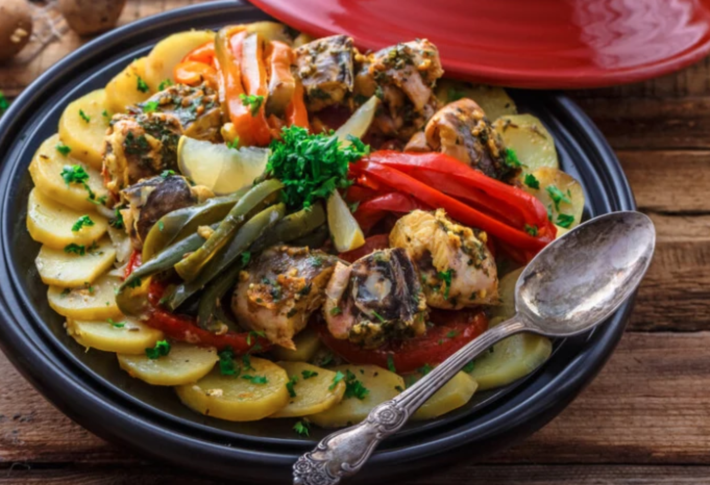

Moroccan Fish Recipe: A Traditional Tagine
Fish Tagine Recipe
Ingredients
- 35 oz firm, thick fish, cut into pieces
- 1 batch chermoula (see recipe below)
- 1/3 cup olive oil
- 1 large onion, sliced thinly
- 2 large potatoes, cut into 1/4" slices
- 1 - 2 carrots, cut into 1/4" sticks
- 2 sliced tomatoes
- 2 bell peppers of any color, remove the seeds and thinly slice
- fresh lemon slices
- 1/2 cup green or red olives (optional)
- 1 preserved lemon, cut in quarters (optional)
- 1 or 2 fresh chili peppers, to garnish (optional)
For Seasoning your Vegetables
- 1 tsp fresh ginger, grated
- 1/2 tsp salt - (to taste)
- 1/2 tsp black pepper
- 1/2 tsp turmeric
For the Chermoula Sauce
- 2 cups fresh cilantro (approx. 1 large bunch), picked and finely chopped
- 4 cloves garlic, very finely chopped/pressed
- 1 tbsp cumin
- 1 tsp salt
- 2 tsp paprika
- 1 tsp fresh ginger (optional)
- 1/4 tsp cayenne pepper (optional)
- 1/4 tsp saffron threads, crumbled
- 3 tbsp olive or vegetable oil
- 2 tbsp fresh lemon juice
Directions
Prepare Ahead of Time - Marinate the Fish
- Place all of the chermoula ingredients into a bowl and stir until combined. If the marinade is too thick and paste-like, thin it out with a little more oil or lemon juice or 1 - 2 tbsp of water.
- Reserve half of your chermoula marinade. Cover and refrigerate until needed.
- Use the other half of the mixture to marinate the fish, coating each piece thoroughly with the chermoula.
- Cover. Leave to marinate in the refrigerator for 2 hours or overnight.
Assemble your Tagine
- Add the olive oil to the bottom of a large tagine or a deep cast-iron skillet/pan.
- Add the sliced onion to cover as much of the tagine base as possible. The onion serves as a base for the remaining ingredients.
- Arrange the sliced carrots